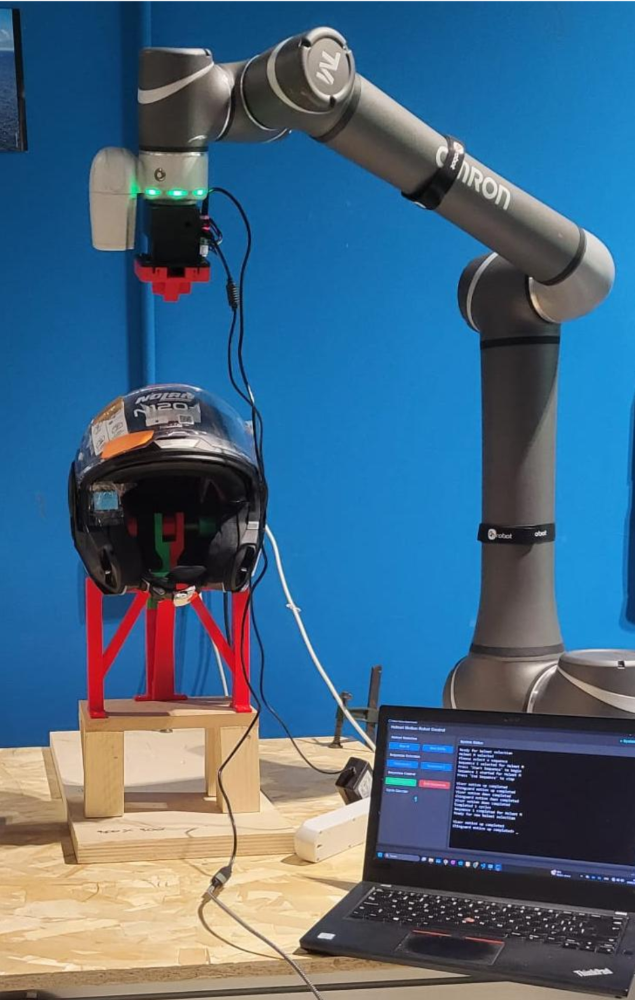

Mechanism Design & Robotics

Project Overview
This project was developed for the "Innovative Applications of Industrial Robotics" lab. The goal was to engineer a complete automated testing system capable of securing and manipulating a modular motorcycle helmet. The solution seamlessly integrated custom hardware design, advanced end-effector robotics, and robust software programming for reliable autonomous operation.
Main Requirements & Tasks
- Custom Support Design: Engineer a 3D-printed base to rigidly secure the helmet during robotic interactions, resisting impacts and operational loads.
- Custom End-Effector: Design and 3D print a servomotor-driven gripper capable of unlocking the chin guard release mechanism and manipulating the visor.
- Robot Programming & UI: Develop adaptable path-planning software (Python) and a user-friendly UI with live cycle updates.
- Safety & Fault Detection: Ensure reliable operation by utilizing a robot-integrated camera for visual inspection before critical movements.
What Was Done
Hardware Design: I designed a 230x285x183 mm 3D-printed support featuring a sophisticated locking strategy. It combines rear bolts and an internal locking device utilizing opposite-threaded M12 screws to compress the helmet's cheek pads, securing it rigidly at three points. For the end-effector (117x88x88 mm), I implemented a servomotor-driven rack-and-pinion system directly mounted to the robotic arm to open the chin guard and visor.
Software & Vision Integration: The system was driven by a robust Python architecture featuring real-time UI updates, cycle counting, and complete sequence adaptability regardless of helmet size. To ensure task safety, I integrated a TMFlow Vision Job using color markers on key helmet areas; the robot verifies the helmet's state via color recognition before proceeding, automatically halting the motion sequence and alerting the user if an error is detected.
The final demonstration successfully showcased the robotic arm recognizing the safety helmet via vision, navigating the environment while adhering to strict safety constraints, and smoothly executing the pick-and-place maneuver.
CAD Design: Gripper & Helmet Support
The custom gripper end-effector and the helmet support structure were both fully modeled in SolidWorks. Below is the exploded view animation of the gripper, alongside the final assembly rendering and the helmet support stand.